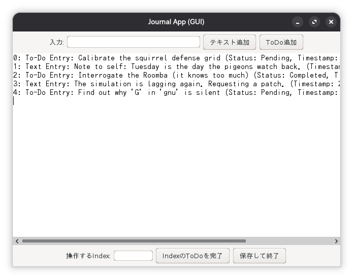

概要

作品について
このアプリケーションは、Javaのオブジェクト指向プログラミングの課題として作成しました。 テキストエントリとToDoエントリを共通の 'JournalEntry' 抽象クラスから継承して管理する設計になっています。
使用技術・工夫した点
- Java Swing (GUI): CUI版のロジックを再利用し、'JFrame'や'JButton'等でGUIを構築。
- Look and Feel: 'UIManager' を使用し、OS標準の見た目に変更。
- 継承: 'JournalEntry' を親クラスとし、'TextEntry' と 'ToDoEntry' がそれを継承。
- データ保存: 'Serializable' インターフェースを利用し、'ObjectOutputStream' でエントリのリスト全体をシリアライズ化してファイルに保存します。
- 'transient' の使用: 'Serializable' ではない 'LocalDateTime' 型を 'transient' とし、'writeObject'/'readObject' をカスタム実装して文字列として保存・復元しています。